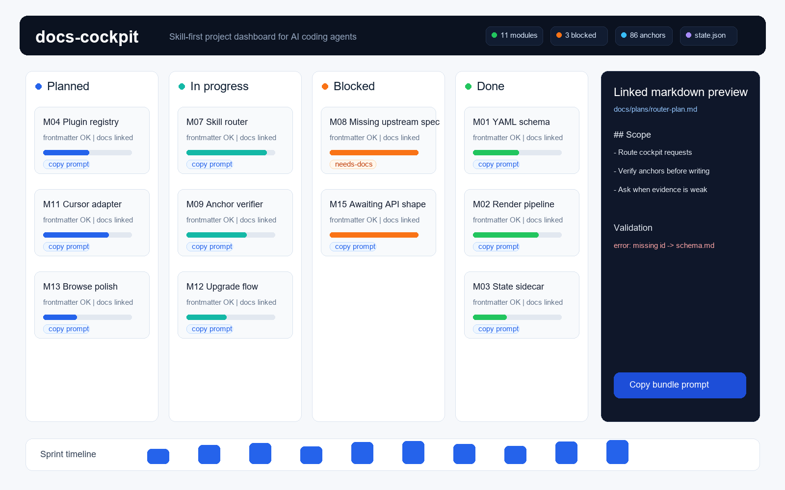

Codex
codex plugin marketplace add Guohao1020/docs-cockpit
codex plugin add docs-cockpit@docs-cockpitRadar Flight Deck for repo-native docs
A skill-first project cockpit for AI coding agents.
Codex and Claude Code can write fast. docs-cockpit gives that output a durable schema, validates markdown frontmatter, and renders a local single-file dashboard your repo can keep.
Product proof
The dashboard is a rendered view over repo files: cards, validation status, linked markdown previews, and machine-readable state for follow-up workflows.

codex plugin marketplace add Guohao1020/docs-cockpit
codex plugin add docs-cockpit@docs-cockpit/plugin marketplace add Guohao1020/docs-cockpit
/plugin install docs-cockpit@docs-cockpitWorkflow
The v1 workflow moves cognition into agent skills and keeps the CLI deterministic, which makes the dashboard explainable, repeatable, and easy to verify in git.
When a repo has docs-cockpit.yaml, the plugin injects the entry skill and routes setup, rebuild, render, and upgrade requests.
docs-cockpit-buildThe first-build skill discovers modules, reasons about doc associations, asks when anchors are uncertain, and writes the cockpit config.
docs-cockpit-rebuildThe refresh skill reads existing state.json, diagnoses drift, re-infers minimal changes, and preserves stable associations.
docs-cockpit renderThe CLI validates frontmatter, embeds linked docs, emits state.json, and writes a single HTML dashboard for local use.
Feature set
docs-cockpit is not another hosted tracker. It is a plugin-guided markdown workflow with a renderer you can run, diff, and audit.
Every document is checked against the canonical schema and reports structured error, warning, and hint issues with references.
Rebuild workflows and external checks can read stable dashboard state without scraping rendered HTML.
The rendered dashboard is a static file you can open locally, publish with GitHub Pages, or commit as a project artifact.
Both plugin workflows are supported now, sharing the same skills, hooks, commands, schema, and release version.
docs-cockpit upgradeThe upgrade command handles CLI and plugin-layer updates, release notes, cache clearing, and restart guidance when skills change.
The CLI renders and validates. Association reasoning lives in skills, keeping output mechanical and easier to trust.
Audience
If your plans, specs, RFCs, and implementation notes live in markdown, docs-cockpit gives agents a shared operating surface without moving data out of the repo.
Keep Codex and Claude Code productive across multiple projects while making every generated doc conform to one schema.
Replace scattered agent notes with a project cockpit you can open locally, share as HTML, and keep under version control.
Use state.json and validation output for CI checks, health reports, and agent handoffs without adopting a SaaS tracker.
FAQ
Yes. docs-cockpit ships a Codex plugin workflow with marketplace install commands, SessionStart routing, and skills shared with the Claude Code surface.
Yes. Claude Code remains a supported plugin workflow and uses the same build, rebuild, render, and upgrade model.
The core renderer and schema are agent-agnostic. Other agents can use the CLI today, while native adapter packaging can evolve around the same files.
No. docs-cockpit render writes static HTML and state.json. You can open the dashboard from file:// or host it as static assets.
Agents are better at judgment and dialogue. The CLI is deliberately mechanical, so rendering and validation stay deterministic.
Run docs-cockpit upgrade. It checks CLI and plugin versions, shows release notes, clears plugin cache when needed, and explains the restart step.
Start
Install the plugin, open a repo, and let the skills build or refresh a schema-validated dashboard over the markdown already on disk.